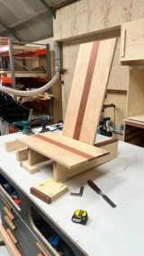
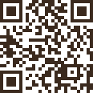
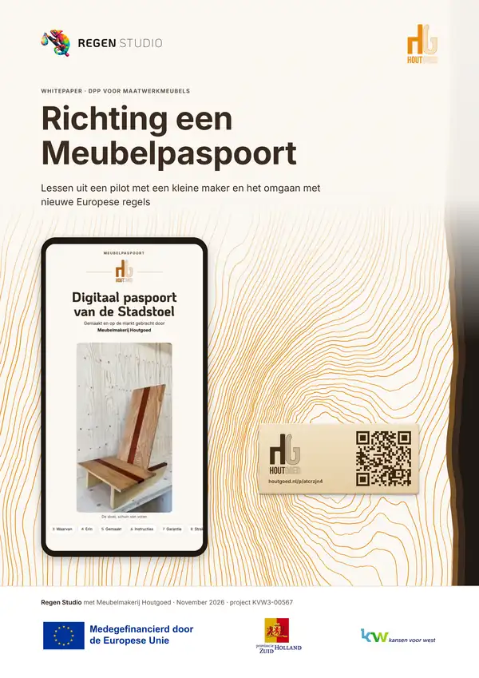
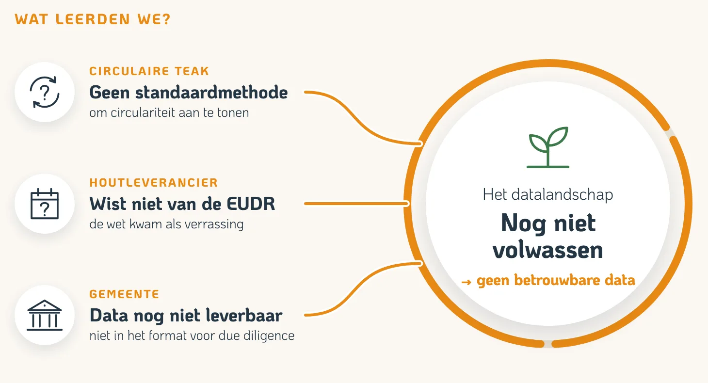
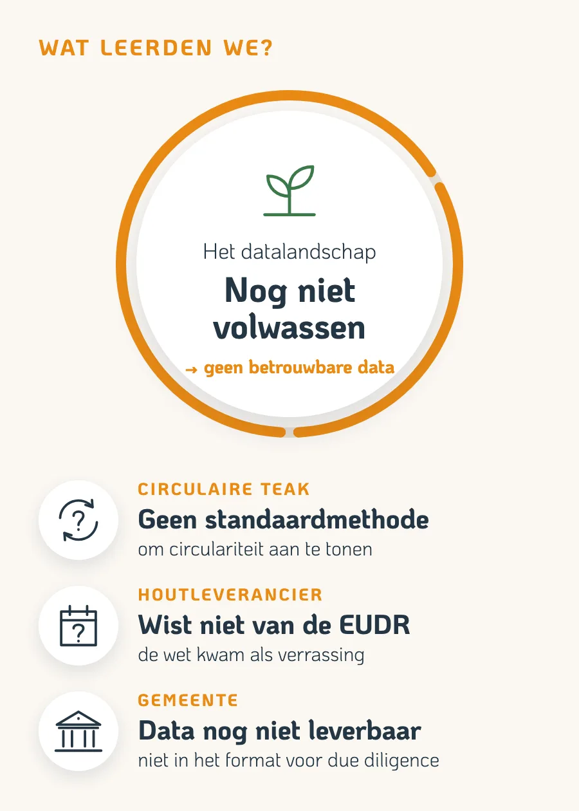
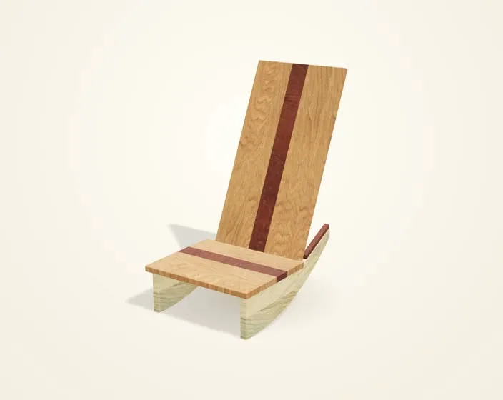

Regen Studio en Meubelmakerij Houtgoed verkenden welke gegevens een kleine meubelmaker nodig heeft voor een digitaal productpaspoort: 218 datapunten, waarvan 129 in het paspoort en 89 in de eigen administratie. We bouwden een systeem dat de werkdag volgt, lieten het 3D-model meeschrijven en zetten het paspoort van de Stadstoel met versiebeheer op de website van de maker.
Het project DPP voor Maatwerk Meubelmakers (projectnummer KVW3-00567) wordt medegefinancierd door de Europese Unie vanuit het Europees Fonds voor Regionale Ontwikkeling (EFRO), de Provincie Zuid-Holland en Kansen voor West III, het EFRO-programma 2021-2027 voor West-Nederland.
Vraag
Wat vraagt een digitaal productpaspoort van een kleine meubelmaker die elk stuk één keer bouwt?
Aanpak
Zeventig bronnen gelezen, 218 datapunten verkend en een licht systeem gebouwd dat de werkdag volgt.
Uitkomst
De Stadstoel heeft een paspoort op de eigen website van Houtgoed. De lessen uit de pilot staan in het whitepaper Richting een Meubelpaspoort.
Regen Studio en Meubelmakerij Houtgoed uit Rotterdam onderzochten samen welke gevolgen de Europese regels voor duurzame producten hebben voor een kleine werkplaats waar elk meubel een uniek ontwerp is. Een meubelmaker die elk stuk één keer bouwt, krijgt met dezelfde Europese regels te maken als een fabriek die een kast duizend keer maakt. Een vrijstelling naar bedrijfsgrootte staat niet in de stoffenwet REACH en niet in de ontbossingsverordening (EUDR), dus kleine makers moeten hoe dan ook een administratie bijhouden. Voor het Digitaal Productpaspoort (DPP) uit de Ecodesignverordening (ESPR) is een vrijstelling voor kleine bedrijven niet de bedoeling, maar de reikwijdte van de gedelegeerde handeling voor meubels kan makers van maatwerk in theorie nog buiten de regels laten.
- 1
In kaart brengen
wat de regelingen samen kunnen vragen
- 2
Systeem bouwen
dat de maker tijdens het werk invult, van invoer tot paspoort
- 3

Meubel maken
de Stadstoel, van eiken stadshout met een strook teak
- 4

Paspoort publiceren
op de eigen website van Houtgoed
Hieronder beschrijven we wat Regen Studio in die pilot heeft gedaan en welke lessen we eruit trokken, die we ook in een whitepaper hebben vastgelegd.

Richting een Meubelpaspoort
Whitepaper, 17 pagina's: wat een meubelpaspoort van een maatwerkmaker vraagt, met de Stadstoel als proef.
Download het whitepaper (pdf, 4,6 MB)Eerst uitzoeken wat er gevraagd kan worden
De regels voor meubels bestaan nog niet: het werkplan van de Europese Commissie noemt 2028 voor de gedelegeerde handeling onder de ESPR, en de paspoortplicht volgt in de regel achttien maanden later, dus naar verwachting niet voor eind 2029. Daarop wachten leek ons onverstandig, want een kleine werkplaats gooit zijn administratie niet in een paar maanden om. We lazen zeventig bronnen, van wetteksten en normen tot sectorstudies, en kwamen uit op 218 datapunten, elk één afzonderlijk gegeven zoals de houtsoort of het gewicht van een onderdeel. Daarvan liggen er 52 al vast in de EUDR of REACH, verwachten we er 67 uit de ESPR en de paspoortnormen, en zijn er 99 vrijwillig. In het paspoort staan er 129; de andere 89 blijven in de administratie van de maker. Lees het als een verkenning van wat de regels samen zouden kunnen vragen, niet als een schatting van wat de meubelhandeling straks verplicht stelt.
Twee wetten komen vóór de meubelregels
- 6 aug 2026formaldehydegrens, 0,062 mg/m³
- 30 dec 2026EUDR voor houten meubels
- 2028, verwachtgedelegeerde handeling voor meubels
- eind 2029, verwachtpaspoortplicht, op zijn vroegst
Zes fasen, vijf zaten al in de werkdag
- 1Intake
- 2Ontwerp
- 3Inkoop
- 4Maken
- 5Opleveren
- 6Publiceren
3D-model, bij het ontwerpzeven datapunten direct, en gewicht, verbinders en een formaldehyde-indicatie afgeleid
Bij de inkoopformaldehydegrens sinds 6 augustus 2026, EUDR vanaf 30 december 2026
Nieuw, publicerenhet paspoort op de eigen website
218 datapunten rond één meubelpaspoort
Elk vakje is één gegeven dat de regelgeving, de normen of de maker zelf kunnen vragen. De buitenste ringen staan in het paspoort, verdeeld over tien onderwerpen, en de binnenste ringen blijven in de administratie van de maker. De 52 datapunten die al in de wet staan, kun je in de stam één voor één aanklikken. Wil je ze als lijst, laat dan je e-mailadres achter; we mailen ze je meteen. De 67 die we verwachten uit de ESPR en de normen, en de 99 vrijwillige, laten we je zien als je ons een bericht stuurt.
Klik op een groen of blauw vakje voor de uitleg bij dat datapunt, of op een oranje of grijs vakje om ze op te vragen.
- Wie ziet het
- Grondslag
- Ontstaat bij
- In het prototype
- Code
Stuur ons een bericht als je alle datapunten wilt zien.
Bron: de datamatrix van Regen Studio en Meubelmakerij Houtgoed, stand 25 november 2026. Het overzicht is een verkenning en geen verwachte eindtelling. De fase van een datapunt dat het systeem zelf uitrekent, is onze eigen indeling.
De 52 datapunten uit de wet, als lijst in je mail
Deze datapunten rusten op de EUDR, de ontbossingsverordening, of op REACH, de stoffenwet. Laat je e-mailadres achter en we mailen je de lijst van alle 52, geordend per bedrijfsfase, met bij elk datapunt de uitleg.
Stuur ons een bericht als je alle datapunten wilt zien.
info@regenstudio.world
Wat de stoel ons leerde
Twee wetten gelden al of bijna, nog voordat de meubelregels er zijn, en beide komen de werkplaats binnen bij de inkoop. Een kant-en-klaar paspoortsysteem voor een kleine maker bestond niet, dus bouwden we een licht systeem dat de werkdag volgt: de maker sleept een factuur erin, het 3D-model rekent gewicht en verbinders uit, en het paspoort van de Stadstoel staat als statisch bestand op de eigen website van Houtgoed.


Alle lessen, de aannames en zestien aanbevelingen staan in het whitepaper Richting een Meubelpaspoort, dat Regen Studio in november 2026 met Houtgoed uitbracht.
Een stoel voor de Black Jaguar Foundation
Houtgoed schonk de Stadstoel aan de Black Jaguar Foundation, die er op haar jaarlijkse donorevent haar eerste donateur mee bedankte. De stichting werkt in Brazilië aan het herstel van de Araguaia-biodiversiteitscorridor en brengt daar ontbost land terug naar bos. Zo komt de stoel terecht bij het probleem waarvoor de EUDR bedoeld is: hout dat in Europa wordt verkocht, mag niet van ontbost land komen. Meer over dat werk lees je bij de Black Jaguar Foundation.

De Stadstoel, met een paspoortREGEN STUDIO
Wil je ook een meubelpaspoort? Wij helpen je op weg.
Werk je in hout, op maat of in kleine series? We laten graag zien wat een productpaspoort van jouw werkplaats vraagt.
info@regenstudio.world